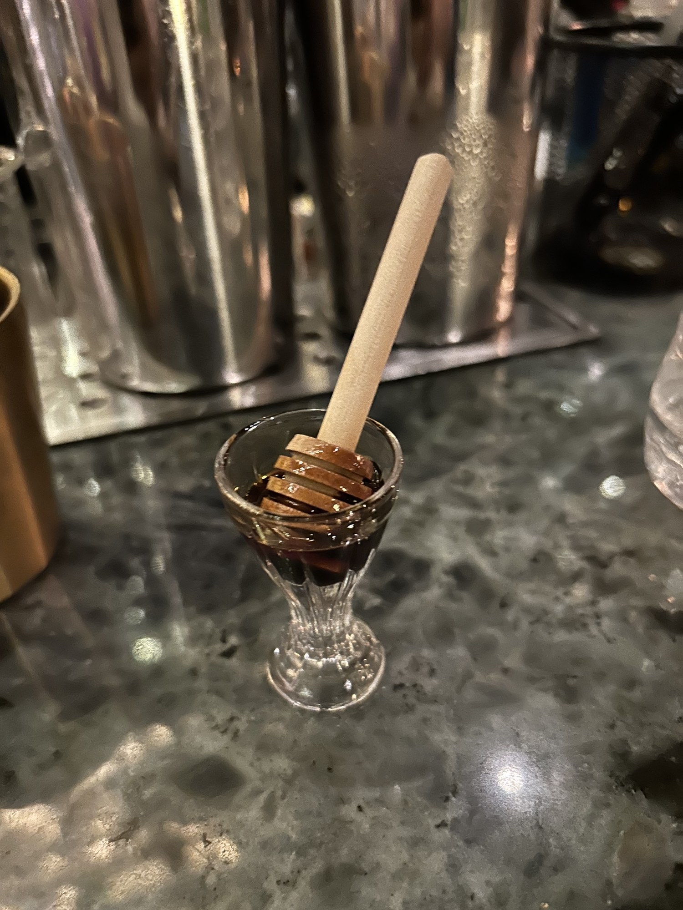

A Mezcal Negroni with an Asian twist. Pu-Erh tea is a Chinese post-fermented tea, associated with earthy, woody, funky tastes. I don’t know if I would like it as a standalone tea, but it really paired nicely with the mezcal.
The mandarin added some nice citrus and fruitiness to make this drink smoother than your typical Negroni. You’d be changing the complexion a bit, but I’d love to try this with the Trigona honey. Tasty drink.
The use of rye instead of Scotch made it a tad spicier than traditional. Also, instead of a ginger-honey syrup, they had a standalone ginger syrup and used fresh honey. This made for each flavor to be more distinct, drinking sweet first and aromatic second.
I wouldn’t call myself a fan of the Penicillin, but I wanted to try the honey in a drink that, for me, relies on it quite a bit to provide balance. Not my favorite, but a good showcase for the Trigona honey.
The Space
Situated high above the bustling streets of Kuala Lumpur at the Four Seasons, this is not your typical hotel bar. The space is massive, with tons of comfy couches for groups and an incredibly visually appealing bar.
As the name states, this bar is focused on using and incorporating Trigona honey into their drinks. Trigona honey comes from stingless bees in Southeast Asia. The flavor profile is less sweet than normal honey and more tropical/floral. This gives bartenders a great platform to develop unique drinks with this specific flavor profile not found in any other ingredient.
I really enjoy bars that have a theme of a certain ingredient or region. The bartenders were super nice, answering all my questions about the honey and how they enjoy using it.
Extras
They also provide, upon request, a sample of the honey. Such a great presentation and really showcases the dark, rich color of this honey.
On its own, it really shines, where you’re able to pick up more subtle flavors such as citrus and woody aromas. If you’re going to be named after an ingredient, you have to go all in, and Bar Trigona definitely does so.

My Verdict
7.3 / 10Taste
6.8 / 10Atmosphere
Taste reflects what I drank. Atmosphere reflects the bar experience.